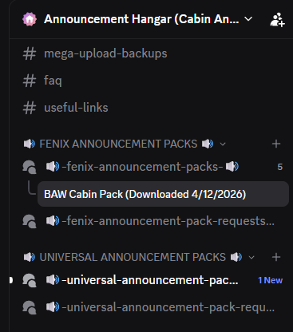
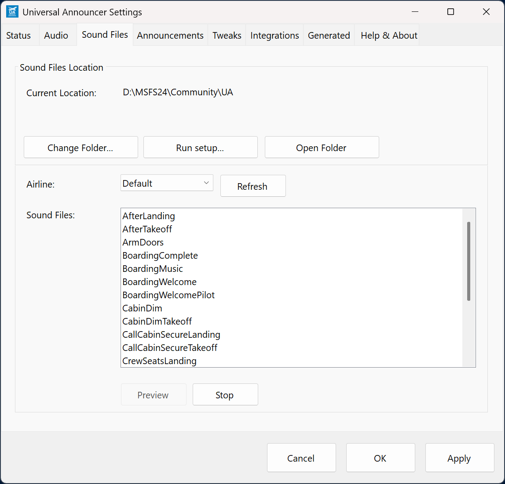
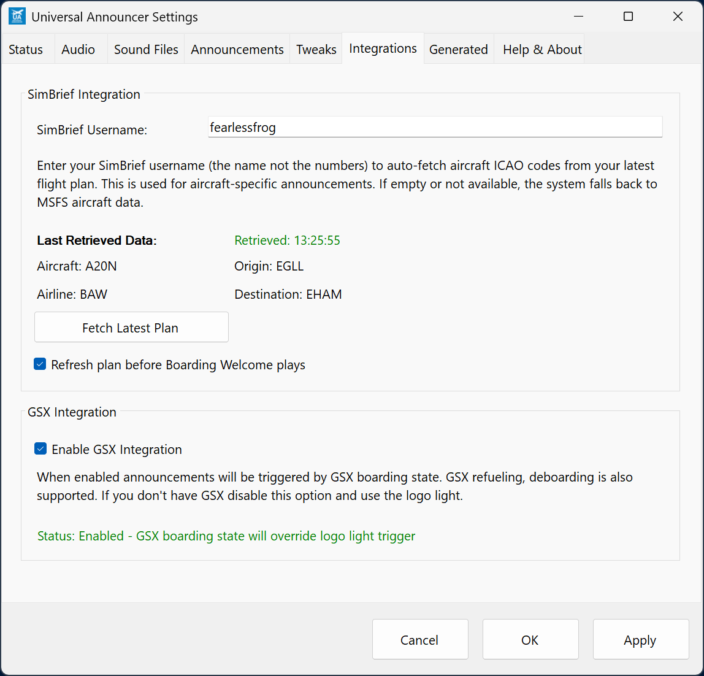
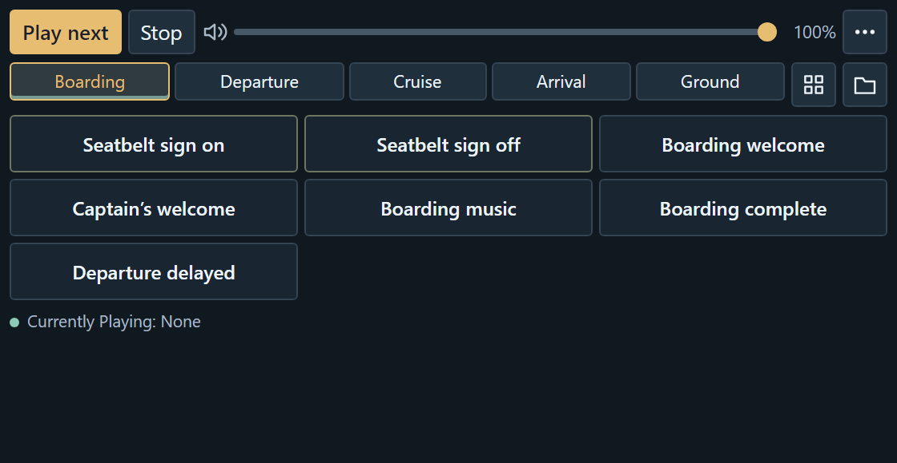
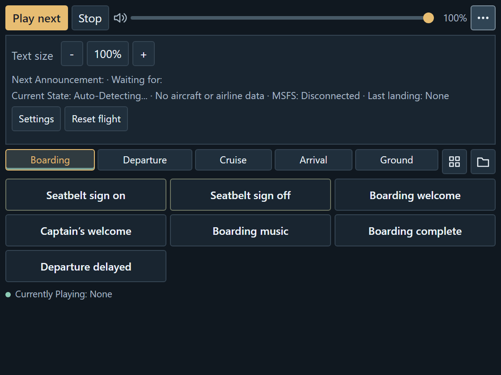
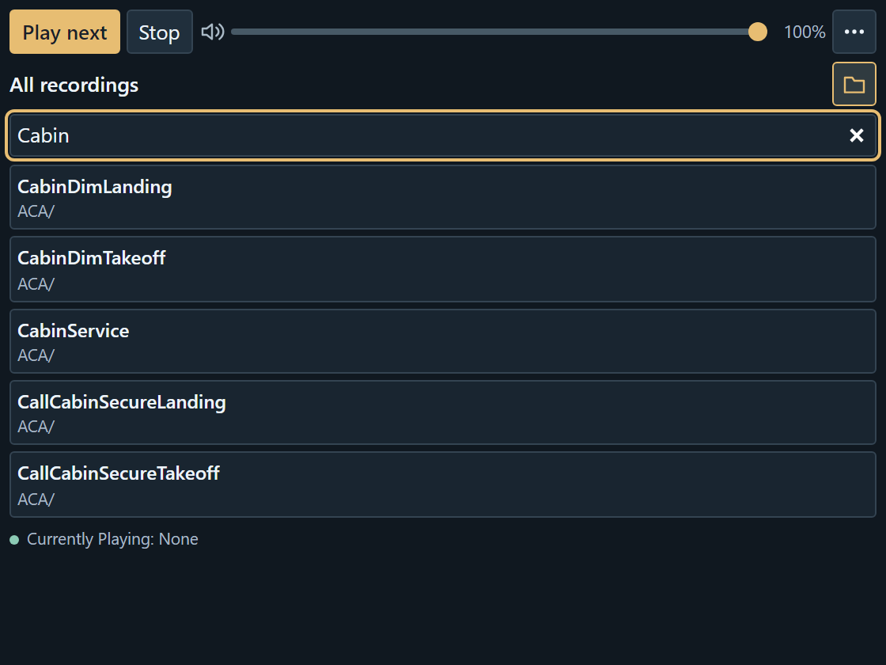
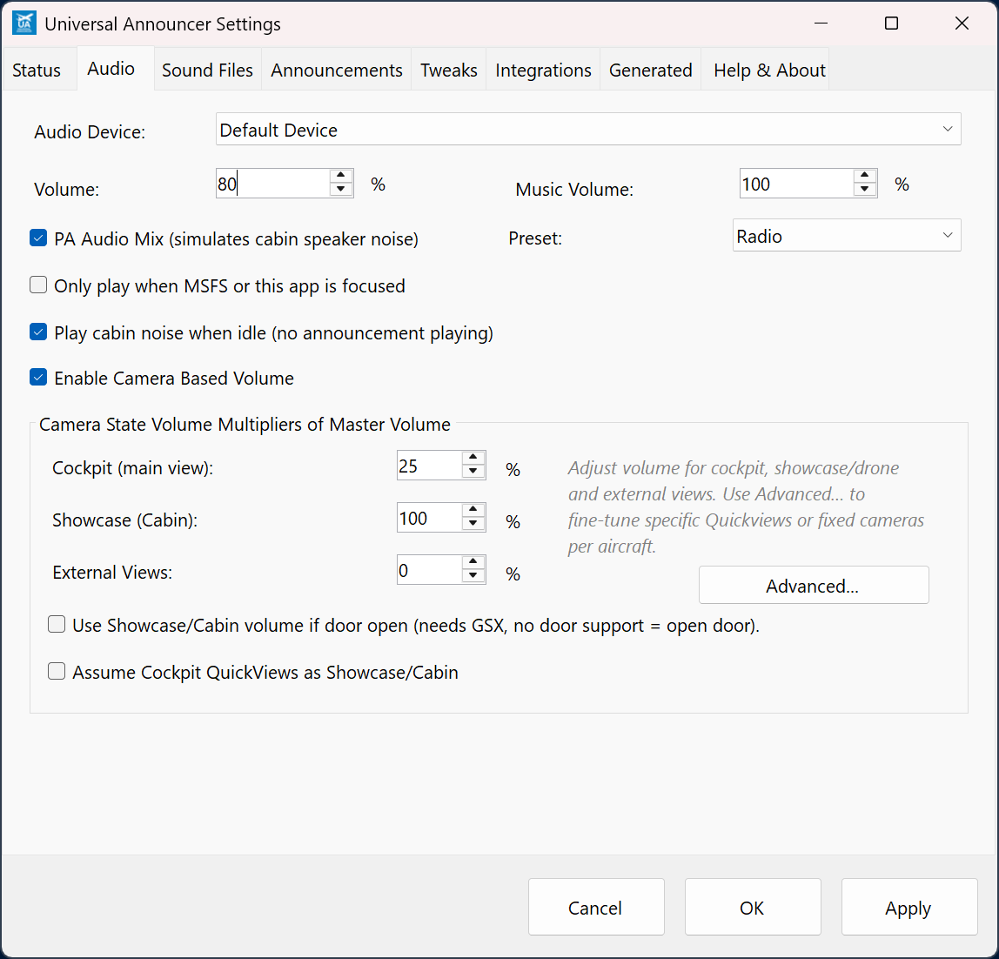
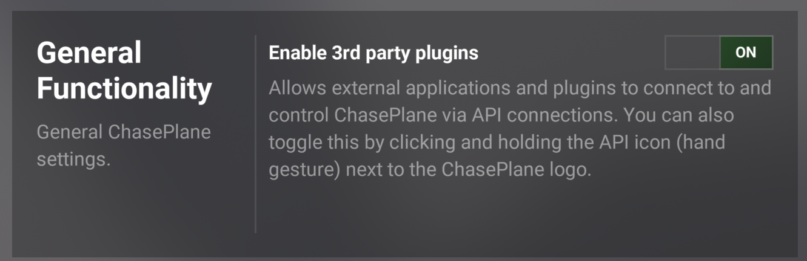
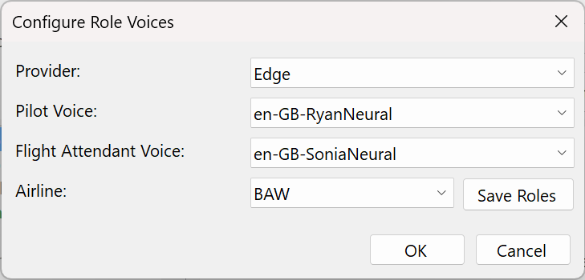
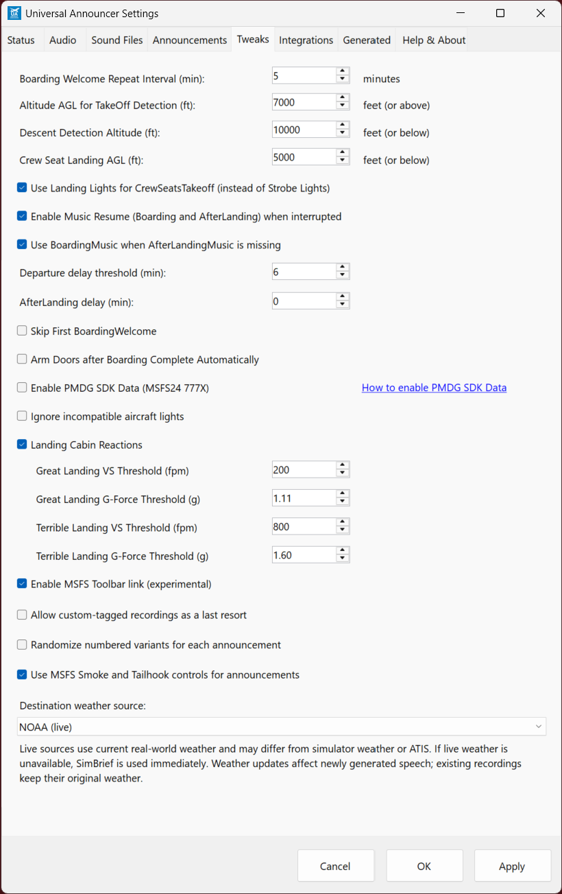

Universal Announcer
Cabin announcements for Microsoft Flight Simulator
Start with a sound pack, check your flight details, then let the app follow the flight. This manual covers installation, a typical airline flight, and the settings you are most likely to use.
App 1.0.2.3 | Revision 2026-11-06.1
The Announcement panel puts everyday calls within reach on the desktop and in the MSFS toolbar. Choose recordings, use generated speech, and control what plays without leaving your flight.
Start here
- New installation: Install and open the app, then set up sounds.
- Ready to fly: Boarding to takeoff and Before your next flight.
- Manual calls: Announcement panel and recording browser.
- Fenix V3 collections: Recording selection.
- Speech without changing your pack: Temporary generated announcements.
- Detailed settings: Flight steps, filename tags and Tweaks.
Contents
Written for Windows users of MSFS 2020 and MSFS 2024. Button names follow the English interface. Optional aircraft and service integrations can behave differently between versions.
Back to contentsInstall and open the app
Universal Announcer runs beside the simulator. It reads flight information and plays cabin audio through your chosen Windows audio device. It works with default and add-on aircraft; Fenix ownership is not required. The announcement sequence is intended mainly for airliners.
Install
- Download the application ZIP from the GitHub releases page or the flightsim.to listing.
- Extract the whole ZIP into a folder you can write to, such as
D:\MSFS\UniversalAnnouncer. Do not run the executable from inside the ZIP or move it away from its accompanying files. - Run
UniversalAnnouncer.exe. The app is for 64-bit Windows 10 or 11. The normal self-contained release includes its .NET runtime; .NET 8 is not part of Windows by default. - Find its icon in the Windows system tray beside the clock. If it is hidden, open the tray's overflow area. Right-click the icon and choose Settings....
The main application stays outside the Community folder. Only the optional toolbar package goes into Community; see MSFS toolbar.
First launch
Open Announcement panel from Status > Flight State Controls, the tray menu, or the Announcements tab. Its desktop window needs the Microsoft Edge WebView2 Runtime and the accompanying ControlPanel folder. No Community package is needed for the desktop panel. If it cannot open, Settings and tray controls remain available.
Use the setup dialog to install the default sound pack or select your existing Fenix files. You can run it again from Sound Files > Run setup.... Then choose an audio device on the Audio tab and play a preview on Sound Files.
Load a flight and check Status for a simulator connection. For the first test, start parked at a gate with the engines and beacon off. Leave camera-based volume disabled until a sound preview works.
Back to contentsClosing the Settings window does not necessarily exit the app. Use Close App or the tray menu's Exit when you want to shut it down. If a second launch says the app is already running, check the tray first.
Get sound packs
Default pack or existing Fenix files
The default pack is the quickest way to check the app without collecting airline packs first. Open Sound Files > Run setup... and use the download option.
If you already own Fenix, the setup dialog can use your installed announcement collection. Keep a backup before changing files you also use with another aircraft. Fenix ownership is not required to use Universal Announcer.
Community packs on Discord
Announcement Hangar is an independent third-party Discord server. It is not owned, operated or affiliated with Universal Announcer. Its community packs are supplied by their authors, not by Universal Announcer.

Join Announcement Hangar on Discord and follow the server's joining instructions. Packs from both announcement categories work with Universal Announcer:
- FENIX ANNOUNCEMENT PACKS
- UNIVERSAL ANNOUNCEMENT PACKS
Fenix-format packs are compatible, so you do not need to own Fenix or limit your search to the Universal Announcement Packs category.
Open the pack channel in either category, find the airline you want, and download its pack. Extract the ZIP and follow any instructions supplied by its author. The screenshot shows the two categories to look for.
Before installing a pack
Read the author's notes for supported aircraft and included announcements. A missing call does not mean the whole pack is unusable; packs contain different selections.
Keep original filenames and .ogg extensions unless you are deliberately changing their tags. Select the collection containing the airline folders, rather than one airline folder. Nested recordings inside an airline are supported. Use the layout on the next page.
Set up and preview sounds
On Sound Files, use Change Folder... to select the collection containing the airline folders. It can be an Announcements or AirlinePacks folder, or a package containing one of those collections. The example screenshot calls its collection UA.

Announcements/ <- select this parent
Default/BoardingWelcome.ogg
BAW/BoardingWelcome.ogg
UAL/BoardingWelcome.ogg
Default is optional. When present, airline folders go beside it, not inside it. BAW and UAL are three-letter ICAO airline codes. Recordings and text templates can be nested within each airline folder. Selecting a collection does not download a pack.
Click Refresh, choose an airline and select a file, then click Preview. No file is selected in the screenshot, so Preview is disabled. If you have Default files, test those too. On Announcements, enable Use Default folder announcements if airline-specific files are missing if you want that fallback.
Back to contentsFenix V3 and recording selection
Both older Fenix-format packs and Fenix V3 collections work with Universal Announcer. You do not need to own Fenix. Select the collection containing its airline folders, for example:
AirlinePacks/ <- select this collection
OCN/BoardingWelcome.ogg
OCN/Departure/SafetyBriefing.ogg
Let the app choose the rules
Open Announcements > Advanced… > Recording selection and leave Automatic (recommended) selected for normal use. The dialog shows which rules Automatic uses for this collection.
Newly selected AirlinePacks collections use Fenix V3 rules. Other new collections use UniversalAnnouncer rules. Existing collections retain their saved selection behavior when you upgrade.
When a pack needs an override
Choose a rule set only if the pack needs different matching behavior. The override is saved for this collection; returning to Automatic restores its original baseline.
- UniversalAnnouncer: weighted tag matching and numbered alternatives that normally stay consistent during a flight.
- Fenix V3: matching conditions ranked by specificity within the selected numbered group. The group persists through restarts and turnarounds; if it has no eligible recording, the app tries group zero, including unnumbered files. Changing the active pack/rules or reconnecting the simulator starts a new selection session. Reopening the panel does not.
Both rule sets support old and new filenames. Neither changes your Default fallback or TTS settings. See shared names and Fenix tags for aliases and variant choices for per-announcement randomization.
Back to contentsLoad your flight details
SimBrief is optional. It supplies the airline, aircraft, route and planned duration, including values used in generated announcements.
- Create and generate your plan in SimBrief. Check its airline, callsign, aircraft and airports.
- Open Settings > Integrations. Enter your SimBrief Username, using the name rather than the numeric pilot ID. No SimBrief password is entered here.
- Click Fetch Latest Plan. Check the returned aircraft, airline, origin and destination. Successfully fetching yesterday's plan still gives you the wrong flight.

Refresh plan before Boarding Welcome plays performs another fetch at boarding. Fetch manually first while learning the setup.
The detected airline selects its sound folder: BAW uses Announcements\BAW. Check the returned code if a codeshare or callsign gives an unexpected result.
Without SimBrief, use simulator aircraft data or the Status overrides described under Everyday controls. For the full preflight checklist, see Before your next flight.
Back to contentsBoarding to takeoff
The app follows aircraft signals. Each call needs an enabled announcement type and a usable sound file or generated replacement. Let each call finish; see Flight steps for the complete trigger tables.
1. Start boarding
With GSX: enable Integrations > Enable GSX Integration, then start boarding through GSX. The welcome begins when GSX reports boarding in progress, with the aircraft on the ground and beacon off. Simply requesting the service is not the same as boarding having started.
Without GSX: clear Enable GSX Integration. With the aircraft on the ground and beacon off, turn the logo light on to start boarding. The app has a fallback when GSX is unavailable, but explicitly disabling it makes the intended workflow clear.
Boarding music follows the welcome and normally loops between announcements. The welcome repeats at the interval set in Tweaks. Optional pilot welcomes and Skip First BoardingWelcome change what you hear, so leave those alone for your first test.
2. Finish boarding and push back
Turning on the beacon, or GSX reporting boarding complete, ends the boarding phase. The app plays Boarding Complete. As the aircraft moves or the engines start, it can play Arm Doors.
The pre-safety announcement waits for the engines to be running and Arm Doors to finish. The safety briefing follows it. At night, a cabin-dimming announcement may follow. The optional Arm Doors after Boarding Complete Automatically setting removes the need to wait for movement or engine start for Arm Doors itself.
3. Taxi and take off
With the engines running, the selected takeoff light signal triggers Crew Seats for Takeoff. By default this is the landing lights; Tweaks can use strobes instead. Cabin Secure follows after the preceding call finishes.
Back to contentsIf the sequence stops, read Waiting for and Next Announcement in the tray menu or the panel’s Flight details. If an aircraft does not report the expected signal, use Play Next once when that call makes sense. It interrupts current audio and bypasses the normal wait; it is not a harmless preview.
Climb to the next flight
Climb and cruise
After Takeoff waits until the aircraft is airborne above the takeoff detection height, normally 3,000 ft above ground, and the post-takeoff delay has elapsed. It is not an immediate wheels-up call.
Enable optional calls on Announcements. Cabin service and Descent started are separate from the captain’s cruise/descent calls; Seatbelt sign off, Dim lights for landing and Deboarding complete add further cabin calls. New automatic types need enabling when upgrading. See additional announcements. Files such as CruiseElapsed50Percent.ogg are scheduled against elapsed flight time and the planned duration. They are not triggered by being halfway along the route on a map. SimBrief supplies the planned flight time.
Seatbelt announcements depend on signals exported by the aircraft. Many aircraft use their own switches, so automatic detection is not universal. Use the panel’s Seatbelt sign on or Seatbelt sign off tile when needed. The Settings Seatbelt button remains available.
Descent and landing
During the arrival sequence, sustained descent below the configured indicated altitude, normally 10,000 ft, or switching on landing lights during descent/approach can trigger the descent seatbelt call. Crew Seats for Landing normally uses 3,000 ft above ground, descent, and landing lights. These are detection settings, not instructions for operating your aircraft.
After landing, slow below 15 knots. The current code also requires the arrival sequence to have been recognized before After Landing plays. An optional AfterLanding delay (min) can postpone it further. Retracting spoilers alone is not the current trigger.
Landing music can follow. Once parked with engines off and the parking brake set, Disarm Doors can play. With that complete, beacon off or GSX deboarding starts the disembarkation call.
A second leg
Generate the next SimBrief plan and fetch it. Check the route and airline again before boarding. GSX deboarding completion can reset the sequence automatically, after Deboarding complete has been dealt with if enabled. Without GSX, request that call manually. For a deliberate fresh start, choose Restart in Settings or Reset flight in the panel once the aircraft is back in a suitable parked state.
Restart stops current audio and clears the sequence's played-announcement tracking. It does not reset all Settings. If boarding conditions are already active, announcements may begin again.
Back to contentsEveryday controls
Use the Announcement panel for everyday calls, or leave the app in the tray. Open Settings... for configuration and manual flight-phase controls.
Stop, mute, skip or restart?
- Announcement tiles: request a call without advancing automatic flight steps. Speech queues behind speech and interrupts music; music resumes after the queue and delay.
- Stop / Resume: Stop clears queued clips and pauses automation. Resume continues without resetting the flight; it does not promise to replay an interrupted recording from the same word.
- Mute / Unmute: silence the audio without clearing the queue or flight progress. A mute binding is available through Bind Mute for a keyboard or controller button.
- Play Next: advance the sequence using the last simulator data, interrupt playback and clear queued manual clips. Use it to recover a missed trigger.
- Restart / Reset flight: stop current audio and reset announcement progress. Settings calls this Restart; the panel calls it Reset flight.
- Manual flight phases: skip the sequence ahead to a chosen phase. Earlier announcements are marked as dealt with; these buttons are not a playlist. Use Auto to return to detection. Use Restart for a fresh boarding sequence.
Sound and timing
On Audio, select Audio Device and set the main Volume. Music Volume controls music and the optional cabin-noise track. On Announcements, enable the announcement types you want to hear. A checked type still needs a matching file or generated audio.
Tweaks holds repeat intervals and detection heights. Enable Music Resume (Boarding and AfterLanding) when interrupted resumes music from its previous position; otherwise it starts again.
Play cabin noise when idle (no announcement playing) adds background sound while passengers are aboard. Replace it with CabinNoise.ogg in an airline or Default folder. Camera volumes still apply.
Without SimBrief
The app can extract an airline code from the simulator's tail number, such as BAW123. Set it in aircraft customization before loading. Alternatively, enter airline and aircraft ICAO overrides on Status. The Reset beside those fields clears the overrides; it does not restart the sequence. Without plan data, use recordings or templates that do not need route and duration values.
Startup and focus
Enable Start with MSFS on Status if you want the simulator to launch the app. Show this window when the app starts makes Settings easier to find.
If Only play when MSFS or this app is focused is enabled, audio becomes silent while another application has focus. Playback continues silently, so switching back does not replay the part you missed.
Back to contentsKeyboard and controller bindings
Use standard MSFS commands to control announcements from a keyboard, controller or device utility. These bindings work without the toolbar package.
- In Settings > Tweaks, keep Use MSFS Smoke and Tailhook controls for announcements enabled. It defaults to on; a saved disabled preference is retained. Apply or OK takes effect without reconnecting.
- In MSFS Controls, select your keyboard/controller and search all commands for the names below.
- Assign each desired command to a separate, single-press key or button. Disable repeat where your binding software allows it.
| MSFS command | Announcement action |
|---|---|
| Smoke On | Play Next: advance the sequence and clear pending manual clips. |
| Smoke Off | Stop: stop playback, clear the queue and pause automation. Repeated presses do not resume it. |
| Tailhook Up | Reset flight: stop playback and clear announcement progress. |
| Tailhook Down | Mute / Unmute: toggle audio without stopping playback or changing progress. |
Do not bind these actions to button release. For example, Smoke Off on release would immediately stop the call started by Smoke On. Use Resume in the app or panel to resume automation; Play Next can request one next call while automation remains paused. It does not start GSX passenger boarding.
If your aircraft uses these commands
While enabled, the option takes over these smoke/tailhook commands. Turn it off when you need the aircraft’s normal smoke or tailhook functions, or another add-on uses the same bindings. Commands received during menus, loading or disconnects are discarded.
SPAD.neXt and similar utilities
Send SMOKE_ON for Play Next and SMOKE_OFF for Stop. For tailhook actions, send SET_TAIL_HOOK_HANDLE with value 0 for reset or 1 for mute. No custom LVAR or on/off pulse is needed. Toggle-smoke and toggle-tailhook commands are not substitutes for these bindings.
Announcement panel and MSFS toolbar
The desktop panel and MSFS toolbar share the same announcement controls. Keep Universal Announcer running. On desktop, open Announcement panel from Status, Announcements or the tray.

Choose Boarding, Departure, Cruise, Arrival or Ground to find a call. The initial bank follows the flight stage; choosing another bank only changes the displayed tiles. Seatbelt sign on/off stay available in every bank. The grid icon opens All stages, including Emergency descent. Turbulence is available in Cruise and Arrival too.
A tile requests an announcement without advancing automatic flight steps. Requested or queued tiles are amber; playing tiles are green. A queued/playing tile cannot be added again until it finishes or is cancelled. Play next, Stop/Resume and main volume stay at the top. Camera multipliers still apply.
Open it inside MSFS
- Close MSFS and install the matching
universalannouncer-toolbarpackage in its active Community folder. Keep the package together without an extra nested folder. MSFS 2020 and 2024 can use different Community folders. - Enable Tweaks > Enable MSFS Toolbar link (experimental) in Universal Announcer. Restart the app after changing that startup setting.
- Restart MSFS, load a flight and open Universal Announcer from the in-game toolbar. Enable its icon in toolbar settings if needed.
If the icon is absent, check the package and restart MSFS. If the panel cannot reach the app, check that the app is running and the toolbar link is enabled. The connection is local to this PC; no router port forwarding is needed.
Back to contentsPanel details and text size
Open the ellipsis (Flight details) for Next Announcement, Waiting for, flight information and queued recordings. The queue count also opens details. Settings opens the desktop settings window; Reset flight clears announcement progress.

Use Text size - / + to adjust text from 80% to 200%, in 10% steps. Click the percentage to restore 100%. Desktop and MSFS remember separate sizes. Desktop also remembers its window geometry and offers Always on top; the simulator uses its own window frame.
Back to contentsPlay a particular recording
The folder icon opens All recordings. Search for a name, then select the exact clip or variant you want. Hover over a recording to read its full name and conditions. The browser can include clips that cannot be selected automatically for this flight.

Exact selections play that file, even when temporary generated speech is enabled. They do not advance flight steps. Speech queues behind speech and interrupts boarding/arrival music; the same selected music resumes after the queue and delay. Stop cancels the queue and pending music resume; Play next replaces queued manual work with the next automatic step.
Back to contentsChoose the right recordings
Start with plain filenames. Add tags when you need a different recording for a particular aircraft, time, airport or route. Keep an untagged fallback if a pack should work on other flights too.
Aircraft and variants
SafetyBriefing[A20N].oggmatches that specific aircraft type.SafetyBriefing[320].oggcovers the Airbus A320 family, including A20N and A21N.[A320]is an exact type, not the whole family.BoardingWelcome[Morning].oggis a time-of-day variant.BoardingWelcome[1].oggandBoardingWelcome[2].oggprovide numbered alternatives. By default the selected group stays consistent for a flight (or across turnarounds with Fenix V3 rules). Randomization can instead vary each call.
Put tags between the announcement name and .ogg, for example AfterTakeoff[A359][2].ogg.
Airports and languages
Ordinary airport tags use the departure context for early announcements through After Takeoff, and the arrival context later. Explicit [ARR] and [DEP] tags choose the context themselves.
AfterLanding[EGLL].ogg
BoardingWelcome[ARR][EGLL].ogg
BoardingWelcome[ARR][ED##].ogg
The first is an arrival at Heathrow. The second mentions Heathrow during boarding. The third targets German destination codes beginning with ED. Use # wildcards with ARR or DEP to select recordings by region. See All filename tags for the rules.
Route tags
BoardingWelcome[CYVR~KSFO].ogg requires a SimBrief flight from CYVR to KSFO. Both endpoints must match, regardless of announcement phase. Use ~ between departure and arrival lists; see Route Tags for lists, wildcards and combinations.
Fallback and intentional silence
In saved-generation mode, an airline recording normally takes priority. If none matches, enabled generated fallback can fill the gap before the app looks in Default. Default fallback must be enabled on Announcements. See generation modes before allowing existing recordings to be replaced.
The [mute] filename tag deliberately skips a matching announcement while counting it as handled. Use it only when you want that behavior; lowering the volume is a different action.
For Fenix V3 collections, see recording selection. Custom equipment tags can use an optional last-resort fallback. For the complete list, see All filename tags, matching rules and aircraft families.
Back to contentsSet camera volumes
Open Audio and enable Enable Camera Based Volume. The three controls are multipliers of the main volume, not three independent main-volume settings.
This is a useful starting point. Set Cockpit (main view) to 25%, Showcase (Cabin) to 100%, and External Views to 0%. Adjust to taste after listening through your usual device.

Test the three levels in a native cockpit, passenger and exterior view. If you cannot hear anything, check the main volume and mute controls before changing the multipliers.
Use Advanced... for individual quickviews; see the next page. The PA and cabin-noise options are separate choices, not requirements for camera volume.
Back to contentsSet rules for individual views
- Load your aircraft, open Audio > Advanced..., and check the aircraft named at the top.
- Switch to the desired view in MSFS, then click Find current view. The Current column identifies its row.
- Set Treat as to Cabin, Cockpit or External; Auto uses normal classification. Check Mute to silence that view.
- Click OK to save, return to the view and listen again.
The dialog covers pilot, instrument, cockpit quickview, showcase fixed, external quickview and drone views. It identifies the camera type/index, not your exact seat position, so a passenger view may need a Cabin rule.
Rules apply to the detected aircraft model; without an aircraft the dialog edits global defaults. No camera data means you need a simulator connection before using Find current view. If you change aircraft, reopen the dialog. When ChasePlane controls the view, the dialog explains that native camera rules do not apply; use the ChasePlane setup.
Assume Cockpit QuickViews as Showcase/Cabin is a broader shortcut for cockpit quickviews. Use Showcase/Cabin volume if door open needs GSX; unsupported door data can be treated as open. Leave it off while establishing your basic levels.
Back to contentsUse ChasePlane
ChasePlane can select cockpit, passenger and exterior views without reporting them in the same way as the simulator's own cameras. Universal Announcer recognizes its view identity and presets.
Set it up
- Run ChasePlane and load the aircraft you want to use.
- In ChasePlane preferences, open General Functionality and set Enable 3rd party plugins to ON.
- Run Universal Announcer and enable Audio > Enable Camera Based Volume.
- Set clearly different levels for the test: Cockpit 25%, Showcase/Cabin 100%, External 0%.
- During audible playback, select a saved pilot view, a saved passenger view, and an external view. Allow the view to settle before judging the volume change.

How it chooses the volume
A recognized ChasePlane preset uses the app's Cockpit, Cabin or External category. When that identification is active, it takes priority over the ordinary MSFS quickview rules. Editing an MSFS Quickview row is therefore not a general way to reclassify a ChasePlane preset.
The three volume categories still apply. No server address or configuration-file edits are needed.
If pilot and passenger views sound the same
First confirm that their category volumes differ and the master volume is audible. Check the third-party setting in ChasePlane, then test saved presets rather than a free camera position between them. If necessary, restart the two applications after changing integration settings.
Try a native MSFS camera as a comparison. If native camera volumes work but ChasePlane views do not, collect a short debug log while switching between the failing presets. Include the simulator version, ChasePlane version, aircraft and preset names in the report.
Back to contentsFor an unrecognized view, include its name and your ChasePlane version in the report.
Generate your first announcement
Create saved .ogg recordings with Edge below, or use local TTS. For other languages, choose suitable templates and voices. Back up your pack first.
- Configure the sound root, create the target airline folder if needed, and fetch your SimBrief plan.
- Open Generated, with Use temporary generated announcements off. Select Airline, Provider: Edge,
BoardingWelcomeand a voice (use Roles if indicated). - Check the text, including any
##Voice:or##Role:override. Click Test Voice to hear it with available flight data. - Edit the wording, click Save txt, then Generate. Open Sound Files, refresh, select the new file and Preview it.
Leave replacement options off to preserve recordings. Use temporary mode for speech without saving audio into the pack.
Edge needs internet but no personal API key; saved recordings play offline. Enable Generated TTS fallback allows automatic creation. Manual generation needs an airline folder; Default cannot be the output target.
Back to contentsEdit templates
Templates are .txt files named for a call, such as BoardingWelcome.txt. The editor loads airline text first, then Default text, then a built-in template. The new calls also have templates.
Start in your language
Built-in templates cover English, French, Spanish, German, Italian, Brazilian Portuguese, Japanese, Korean and Simplified Chinese. Choose Help & About > Default language, restart the app, then open Generated and select a template. This also changes the interface language.
Saved airline or Default .txt files still take priority. Back them up before using Revert txt to expose the built-in translation. Alternatively, write or paste your own translated text into the editor; you can do this while keeping the interface in English.
Flight numbers in French and Spanish
Keep placeholder names unchanged in translated text. For example:
Bienvenue à bord du vol {FLIGHT_NUMBER_DIGITS}
à destination de {DESTINATION_CITY}.
Bienvenidos al vuelo {FLIGHT_NUMBER_DIGITS}
con destino a {DESTINATION_CITY}.
Use either language, or both with a multilingual voice. {FLIGHT_NUMBER_DIGITS} turns AFR123 into 123. The voice reads the number in the surrounding text's language, rather than receiving English number words. Use Test Voice to check pronunciation and number grouping.
Save, generate and revert
Save txt saves in the selected Airline folder, including Default. Generate creates audio; text edits do not change saved recordings. Temporary mode resolves edits for new requests. See generation settings for automatic replacement.
Revert txt deletes the selected airline override if present; otherwise it can delete the Default override. It does not restore an overwritten recording.
Useful placeholders
{AIRLINE_NAME}and{AIRCRAFT_NAME}supply names;{AIRLINE_CODE}and{AIRCRAFT_CODE}supply codes.{ORIGIN_CITY}and{DESTINATION_CITY}supply city names;{ORIGIN_CODE}and{DESTINATION_CODE}supply airport codes.{CRUISE_ALTITUDE_FT}supplies the planned cruise altitude.
Some placeholders already contain English words, including {FLIGHT_TIME} and {LOCAL_TIME}. For a non-English call, replace those phrases with wording in your language or omit them. A multilingual voice does not translate text. See the full dynamic-tag reference for values and template syntax for conditions.
Choose voices and roles
These are Edge examples; see compatible API voices for local models. For French, Spanish or bilingual calls, try Ava Multilingual (en-US-AvaMultilingualNeural, default) or Emma Multilingual (en-US-EmmaMultilingualNeural). Their en-US prefix does not restrict them to English. Supply your chosen language and use Test Voice.
For English, try Sonia/Ryan (British) or Aria/Jenny (US). The screenshot pairs Ryan for Pilot with Brian for Flight Attendant. Test airport names and flight numbers.
Assign a pilot and flight attendant
Open Generated > Roles, choose the provider and airline, select Pilot Voice and Flight Attendant Voice, then Save Roles. Choose (Default) for voices shared by airlines without their own assignment. The settings are stored in roles.json in the corresponding sound folder.

##Role: Pilot or ##Role: FA uses these assignments; ##Voice: overrides them. Airline roles override Default roles, with the main voice as fallback. Without a role, templates use the flight-attendant role when available.
Auto pick Roles based on Airline Country chooses voices when no airline roles file exists. Leave it off for predictable manual assignments. Voice selection does not translate your text.
Override one announcement with Insert Voice
##Voice: Edge/en-GB-SoniaNeural
##rate:-10%
##pitch:0Hz
Welcome aboard. Please keep the aisle clear.
For Edge/Azure, rate changes speed (-10% slower, +10% faster); pitch changes Hz. +0% and 0Hz leave them unchanged. Test small changes first.
Choose how generation is used
These workflows save audio into your collection; leave Use temporary generated announcements off. For speech without pack changes, use temporary mode.
Keep recordings and fill gaps
Enable Enable Generated TTS fallback, but leave both Replace existing .ogg options off. Matching airline recordings are kept. If one is missing, generation can supply it before Default fallback is considered. The target airline folder must exist, or Auto create missing airline folder must be enabled.
Refresh flight-specific recordings
Replace existing .ogg if Airline txt permits regeneration when the airline has its own template. Replace existing .ogg Always broadens replacement to allow Default text too. Regenerate only if dynamic limits regeneration to templates containing dynamic placeholders.
Per-flight guards and filename matching also apply. Fetch the correct plan, generate before departure and preview the result. Back up irreplaceable recordings.
Generate before flying
Generate As.. lets you choose a filename, including supported tags. Manual generation writes audio to the selected airline folder. You can save text and role defaults under Default, but cannot select Default as a manual audio-generation target.
Use Generate for one item or Generate All for the set. Check airline and voice first. Generate before boarding to avoid service delays; leave replacement off to reuse prepared files.
Other providers
Windows uses locally installed voices and can work offline. Voice availability depends on your Windows installation.
OpenAI-compatible API connects to a separately running local TTS model server or a compatible hosted service. See local TTS setup and hosted services.
Azure needs an Azure Speech resource, API key and matching region. ElevenLabs needs its API key and a supported voice/model. Enter these on Generated. Check service limits and pricing before large batches.
Audio > PA Audio Mix (simulates cabin speaker noise) adds a cabin-speaker effect to generated audio. Choose a preset, regenerate and preview a sample. Saved files do not change automatically. Keep calls short; use recordings for music.
Back to contentsTemporary generated announcements
Use this mode when you want spoken calls generated from text without replacing your pack recordings.
- On Generated, enable Enable Generated TTS fallback, select a provider and configure its voice or roles.
- Select Use temporary generated announcements. Click + Details for the explanation.
- Let automatic calls run, use Play next, or request a panel tile. Speech uses eligible airline text, then Default text, then localized built-in templates, with your usual voices and placeholders.
Spoken pack recordings are bypassed, but enabled types and explicit mute tags still apply. Music, cabin ambience and landing reactions play normally. All recordings remains available for an exact pack file.
Audio is cached outside the pack for this app session and cleaned up at shutdown. Relevant text/voice changes refresh it; a flight reset starts a fresh cache scope. Queued or playing clips keep their resolved audio. The mode does not create airline folders or save audio/templates into the pack. Explicit Save txt and role editing still save your edits.
Save recordings or retry a failed call
Generate, Generate As, Generate All and replacement options are unavailable while this mode is active. Turn it off to save recordings again; the saved-generation preferences are retained. Mode changes affect new requests.
If generation fails, the call is skipped without recorded-audio fallback. Check the provider and text, then request the tile again to retry. Automatic retries reuse the failure until inputs change or the flight resets. Browsing the panel does not generate speech. Percentage cruise calls need a corresponding template.
Back to contentsConnect a local TTS server
OpenAI-compatible API uses a separate TTS server. Examples include Qwen3 Audio API for Qwen3-TTS and Kokoro-FastAPI for Kokoro-82M. Other models, such as Chatterbox, also need a compatible speech server.
Follow the server’s installation and hardware guidance. Universal Announcer does not install models or start servers. Generation can work offline if the server does.
The server must provide an OpenAI-style speech endpoint that accepts text, model and voice and returns WAV audio. A chat-only API is not enough. Universal Announcer requests WAV, then converts it to the usual .ogg recording.
Set the connection on Generated
Select Provider: OpenAI-compatible API, then enter the values for your server:
- API Base URL: the default is
http://127.0.0.1:8880/v1, for a server on this PC. Change the address, port and path to match your server. Enter the API base only: the app appends/audio/speech, givinghttp://127.0.0.1:8880/v1/audio/speechin this example. - API Key (optional): leave blank if your server requires no authentication. Otherwise enter its key here; the app sends it as a Bearer token. Do not put credentials in the URL.
- Model: type the identifier accepted by your server. The default
tts-1is only a starting value; it does not install or select a universally available model. The field is editable even if the list contains only that value. - Voice: choose a discovered voice or type the exact voice ID your server accepts. The default
Ryanis server-dependent. An empty voice list does not necessarily prevent synthesis; use a known valid ID and test it.
Generate your first local announcement
For these saved-file steps, leave temporary mode off. The same connection also supports temporary speech.
- Start the TTS server and wait until its model is ready. Confirm its API address, model and voice in the server's own instructions.
- Configure the connection above. Choose a test Airline folder and
BoardingWelcome; fetch your SimBrief plan if the text uses flight details. - Check any
##Voice:or##Role:lines before testing. An old Edge override can still select Edge. Use compatible API voices and roles to select the intended local voice. - Click Test Voice with a short message. When it sounds right, edit the template, click Save txt, then Generate. Manual audio generation needs an airline folder; Default is not an output target.
- Open Sound Files, click Refresh, select the new
.oggand Preview it. Keep automatic replacement off to reuse the recording unchanged.
Keep the server running for new speech; saved .ogg files play without it. Generate before boarding to avoid model delays.
Compatible API voices and troubleshooting
Voices, roles and templates
Voice discovery depends on the server. Voice, Pilot Voice and Flight Attendant Voice accept typed IDs for this provider. In Generated > Roles, select OpenAI-compatible API, choose the airline or (Default), enter its voices and click Save Roles. Edge voice names are not portable to other servers.
The usual voice priority applies: explicit ##Voice: overrides a role; airline roles override Default roles; the main voice is the fallback. A template without a role uses the flight-attendant role when available. For predictable local voices, leave Auto pick Roles based on Airline Country off and assign roles yourself.
Use Insert Voice, or enter this example only if your server supports Ryan:
##Voice: OpenAI-compatible API/Ryan
Welcome aboard flight {FLIGHT_NUMBER_DIGITS}.
The provider uses the base URL and model configured on Generated. It ignores ##rate: and ##pitch:. Language support and pronunciation depend on the server's model and voice; test your own text before generating a pack.
Use a hosted service
Select the same provider and enter the service's API base URL, usually an HTTPS address ending in /v1, plus its required API key, model and voice IDs. Use the path specified by that service, excluding /audio/speech. The service must support speech synthesis with WAV output.
Hosted generation needs internet access and sends the resolved announcement text to that service. Check its account limits and charges before a large batch. Saved files play offline; temporary speech needs the service. Recheck model and voice IDs when switching servers.
If generation fails
- Cannot connect or endpoint not found: check that the server is running and ready, and verify the address, port and API base path. Do not enter the full speech endpoint or duplicate
/v1. - Authentication rejected (401/403): check the server's required key and access permissions. “Optional” means a key can be omitted only when the server allows it.
- Model or voice rejected, or no voices listed: use exact IDs supported by the active model. Type a valid voice if discovery is unavailable; check Roles and explicit template overrides too.
- Invalid WAV response: the server must return WAV audio for the speech request. A successful web page or a chat response does not establish TTS compatibility.
- Slow or timed-out generation: this provider allows up to five minutes per synthesis request. Wait for model loading to finish, test shorter text and inspect the server log. Generate before boarding to avoid in-flight waits.
For an unresolved failure, include the error and server/model details in a bug report. Remove API keys and private details from anything you share.
Back to contentsCommon questions
Can I use packs from the Fenix channel on Discord?
Yes. Packs from both the Fenix and Universal Announcer channels work, without owning Fenix or finding a separate edition of the pack. Use the folder layout in Set up and preview sounds.
Nothing happens when I turn on the logo light
Check the simulator connection, beacon off, ground state and enabled Boarding Welcome. Without GSX, disable its integration. With GSX, start actual boarding. Preview the relevant file to separate a sound problem from a trigger problem. Check Waiting for before pressing Play Next.
I can preview a file, but cannot hear it in flight
Check Stop/Resume, Mute, the selected audio device and camera multipliers. Temporarily disable camera volume and the foreground-only option. An exterior multiplier of zero or a muted quickview can explain silence even when the main volume is high.
Check the filename too. 1-BoardingWelcome.ogg can preview but will not be found in flight: remove 1- to get BoardingWelcome.ogg. BoardingWelcome.mp3 is not recognised for automatic announcements. Convert the audio to OGG; renaming the extension does not convert it.
I can hear double announcements
The Fenix may be playing its own announcements alongside Universal Announcer. Disable them in the Fenix EFB or using the cockpit radio panel's PA knob. Alternatively, select Stop in Universal Announcer to use only the Fenix's built-in announcements.
It chooses the wrong airline, aircraft or language
Fetch the correct SimBrief plan and read the returned values. Check Status overrides and the exact folder code. A20N does not match an exact [A320] tag; use [A20N] or the family [320]. Use arrival/departure tags to select regional recordings. Changing the UI language does not translate recorded audio.
The aircraft's seatbelt switch does nothing
Some add-ons do not expose a usable standard switch signal. Use the panel’s Seatbelt sign on/off tiles or the Settings Seatbelt button. A simulator Annunciator On/Off binding is another supported signal path, but verify it with your aircraft rather than assuming its panel switch is connected.
It skips ahead or gets stuck after pushback
Check Waiting for, the phase and GSX setting. If an aircraft signal is missing, use Play Next when appropriate. Use a tile to play a call without advancing the sequence.
My edited words or new voice are not being used
Check airline, Save txt destination, ##Voice:, Roles and existing audio. Text edits do not replace saved recordings: generate and preview the file. In temporary mode, make a new request after checking text/voice; queued clips keep their audio.
Troubleshooting and support
For local or hosted OpenAI-compatible API failures, see compatible API troubleshooting.
Edge generation fails or its voice list is empty
Check internet access and try a short Test Voice. Try another currently listed voice and check for an app update. A service-side change can affect every voice. Use existing recordings or Windows voices while diagnosing it; reinstalling sound packs is unlikely to repair a voice-service problem.
The Discord invitation does not open
Try the invitation in another browser or the Discord app. Complete the server's normal joining steps. If the invitation has expired, use the current link on the project's help page or ask the pack community for an updated invitation. Do not assume that an inaccessible channel means your sound files are installed incorrectly.
Updating and preserving your setup
Use the app's Check for updates..., or download a new release and follow its notes. Exit the running app before replacing files manually. Keep your sound packs, custom .txt templates and roles.json files backed up. Keep the accompanying ControlPanel folder with the executable. For the shared toolbar UI, install the matching updated Community package supplied with the release; do not retain an older panel package.
Settings and logs live in %APPDATA%\UniversalAnnouncer. Paste that into File Explorer's address bar. Your sound root can be somewhere else; check Sound Files > Current Location before backing it up.
Make a useful bug report
- Open Help & About and click the logo three times quickly. Confirm the debug-mode message.
- Reproduce the problem once, noting the flight phase and the action you took. Restart the app first if the problem happens during startup.
- Click Debug mode active - click here to open log location on Help & About, open
%APPDATA%\UniversalAnnouncer\debug.log, or use the tray’s View Debug Log. - Report the app version, simulator version, aircraft, relevant GSX/ChasePlane versions, expected result and actual result. Include the relevant log and a screenshot if useful.
- Toggle debug mode off with three quick logo clicks when finished.
A startup warning can flag a large debug log. Open its location and keep only the relevant material for your report. Turn debug mode off after diagnosis.
Check logs and configuration for personal paths, usernames and credentials before sharing. Use GitHub Issues so the report can be tracked.
If Windows security flags a download, verify its source and consult the project's security-software notes. Do not disable protection just to make a warning disappear.
Back to contentsBefore your next flight
At the gate
- Start the app and confirm the simulator connection.
- Generate and fetch the correct SimBrief plan, or check your manual airline/aircraft selection.
- Confirm the collection and preview a file if you changed packs. Leave recording selection at Automatic unless the pack needs an override.
- Check the audio device, main volume, mute and camera levels.
- Choose GSX boarding or the logo-light workflow; enable the announcement types you want, including optional new calls.
- Choose saved or temporary generated speech and check the template/voice. Generate saved audio before boarding to avoid service delays.
- Open the Announcement panel if wanted and check any smoke/tailhook bindings.
- Start boarding with the beacon off. Let the sequence follow the flight.
When something stops
Read Waiting for and Next Announcement first. Check the required signal and the selected file. Use Play Next once to recover a missed trigger. Use Restart only when you want a new sequence.
Names worth keeping handy
Announcements\Default\BoardingWelcome.ogg
Announcements\BAW\SafetyBriefing[320].ogg
Announcements\BAW\AfterLanding[EGLL].ogg
Announcements\BAW\BoardingWelcome.txt
Announcements\BAW\roles.json
In templates, ##Role: Pilot and ##Role: FA select crew roles. ##Voice: Edge/en-GB-SoniaNeural overrides the role for that template. {DESTINATION_CITY} and {FLIGHT_TIME} are examples of values supplied at generation time.
Further help
- Project help and current download links
- Generated-announcement reference
- Flight steps, dynamic tags, filename tags, aircraft families and Tweaks settings
- Announcement Hangar Discord
- Bug reports
Older reference pages describe earlier versions in places. This manual's app version is printed on the cover and page footers; check release notes when a newer version changes a control or trigger.
Back to contentsFlight steps: departure
This reference covers v1.0.2.3. The three flight-step pages cover all 30 announcement types, including manual-only calls. Add .ogg to the names below. Calls must be enabled on Announcements and have a matching recording or generated replacement. AGL means height above ground; MSL means altitude above sea level. Timing is subject to audio finishing and announcement spacing.
| File name | Trigger and timing |
|---|---|
BoardingWelcome |
On ground, beacon off, boarding not complete. Starts with GSX boarding state 5, or the logo light in the non-GSX workflow. Repeats at the configured interval, normally 5 minutes. Skip First BoardingWelcome suppresses the initial call. |
BoardingWelcomePilot |
Optional pilot welcome during active boarding. Normally replaces the first repeat after the initial cabin welcome; plays once per boarding session. If disabled, the cabin welcome is used. |
BoardingMusic |
Loops between welcome calls until Boarding Complete. Can start during boarding even when the first welcome is skipped. |
DepartureDelayed |
During boarding, after a welcome and before Boarding Complete, when the SimBrief scheduled departure is overdue by the configured threshold (normally 10 minutes). Once per boarding session. |
BoardingComplete |
On ground when the beacon changes to on, or available GSX boarding reports state 6. Stops boarding music. |
ArmDoors |
On ground with engines running or groundspeed above 1 knot. Waits for Boarding Complete to finish if it has played. The automatic Arm Doors tweak instead schedules it 30 seconds after Boarding Complete finishes. |
PreSafetyBriefing |
Arm Doors has finished, audio is idle and engines are running. |
SafetyBriefing |
Pre-Safety Briefing has finished and audio is idle. |
CabinDimTakeoff |
At least 10 seconds after Safety Briefing finishes, while dark and before After Takeoff. Uses a SimBrief-based darkness calculation where available, otherwise simulator local-time daylight detection. |
CrewSeatsTakeoff |
On ground, engines running, Safety Briefing handled and the selected light on: landing lights by default, or strobes via Tweaks. |
CallCabinSecureTakeoff |
Still on ground, audio idle, at least 5 seconds after Crew Seats Takeoff finishes. |
AfterTakeoff |
Airborne above the configured takeoff height (normally 3,000 ft AGL), at least 2 minutes after the detected ground-to-air transition. |
With GSX enabled but unavailable, the app can fall back to the logo light. For a deliberate non-GSX workflow, disable GSX integration. GSX requesting boarding (state 4) is not the same as active boarding (state 5).
For the arrival sequence, continue to Flight steps: arrival. Play Next bypasses normal waiting conditions; it is not a preview button.
Back to contentsFlight steps: arrival
Normal calls play once per flight unless noted. Optional pilot and cruise calls need enabling. Thresholds below are the current defaults; see the Tweaks reference for settings and ranges.
| File name | Trigger and timing |
|---|---|
TopOfClimbPilot |
After Takeoff handled and 20 seconds within 1,000 ft of SimBrief cruise altitude MSL. Once reached, the milestone is retained while waiting for playback. |
CruiseElapsedXXPercent |
A milestone in elapsed simulator air time against SimBrief planned duration, after After Takeoff. Checked about once a minute in Cruise/Descent/Approach. See cruise timing for guards and short-flight adjustments. |
FastenSeatbelt |
In Climb/Cruise after After Takeoff, when a recognised seatbelt signal changes from off to on. Repeatable with a 2-minute cooldown. The panel’s Seatbelt sign on tile requests a call manually. |
TopOfDescentPilot |
At least 25% of planned air time elapsed, tracked for 30 seconds within 1,000 ft of cruise altitude, then at least 500 ft below cruise and descending faster than 500 ft/min. Established cruise is retained once the requirement is met. |
DescentSeatbelts |
Airborne, After Takeoff handled, in Descent/Approach/Landing. Either below the descent altitude (10,000 ft indicated) while descending faster than 500 ft/min for 10 seconds, or landing lights change to on during descent/approach. |
CrewSeatsLanding |
In Descent/Approach/Landing, below the landing-call height (3,000 ft AGL), descending faster than 300 ft/min, landing lights on. Waits while Descent Seatbelts is playing. |
CallCabinSecureLanding |
Audio idle, at least 10 seconds after Crew Seats Landing finishes, below its height setting plus 2,000 ft (normally 5,000 ft AGL). Waits for enabled landing dimming first. |
AfterLanding |
On ground below 15 knots, with the arrival recognised and Crew Seats Landing or Cabin Secure Landing handled. Optional AfterLanding delay applies. Spoiler position is not the current trigger. |
AfterLandingMusic |
Loops after After Landing finishes until disembarkation. Disarm Doors can interrupt it. |
DisarmDoors |
After Landing has finished, engines off, parking brake set. |
DisembarkStarted |
Disarm Doors has finished and either beacon is off or enabled GSX deboarding is requested/active (state 4/5). Stops arrival music. GSX completion can reset after the enabled DeboardingComplete call is dealt with. |
For optional LandingGreat.ogg / LandingTerrible.ogg, see landing reactions. For idle CabinNoise.ogg, see Everyday controls.
Additional cabin announcements
Enable the new automatic types individually on Announcements when upgrading. Each still needs suitable audio or generated speech. These calls supplement the existing sequence; they do not replace the captain’s announcements or percentage cruise calls.
| Filename / panel name | When it plays |
|---|---|
CabinService / Cabin service |
After AfterTakeoff and 20 seconds within 1,000 ft of SimBrief cruise altitude. Independent of TopOfClimbPilot; when both are enabled, the pilot goes first with normal spacing. |
DescentStarted / Descent started |
After established cruise and at least 25% of planned air time, descending at least 500 ft below cruise faster than 500 ft/min. Needs the relevant SimBrief altitude/duration; manual playback remains available without it. |
SeatbeltSignOff / Seatbelt sign off |
Airborne on-to-off seatbelt transition after AfterTakeoff. The first observed off state does not trigger a call. Repeated transitions are throttled. |
CabinDimLanding / Dim lights for landing |
At night, after CrewSeatsLanding and before CallCabinSecureLanding. Uses destination darkness where available, otherwise simulator local time. |
DeboardingComplete / Deboarding complete |
GSX deboarding completion edge. Turnaround reset waits until this call completes, is skipped/fails, or is explicitly stopped. Without GSX, play it manually. |
Decompression / Emergency descent |
Manual only, available through All stages. Enabling it does not add an automatic trigger. |
Turbulence / Turbulence |
Manual only, in Cruise/Arrival or All stages. There is no automatic turbulence detection. |
All seven have bundled templates in the supported interface languages. Airline text and voice/role choices still take priority. Existing custom files are not overwritten by the new defaults.
CruiseElapsed50Percent is a separate call
The panel uses CruiseElapsed50Percent for the existing CruiseElapsed extension. Manual requests try CruiseElapsed.ogg, CruiseElapsed50Percent.ogg, then Cruise.ogg, with eligible tags. Templates can supply it when generated speech is enabled. A manual request does not mark an automatic percentage milestone complete.
For Fenix shared filenames, see aliases and phase tags. A shared alias supplies the appropriate existing step; it does not create a duplicate scheduled event.
Back to contentsDynamic tags: flight and route
Dynamic tags are placeholders inside template text, written in braces. They are different from filename tags, which use square brackets to select recordings. Use these names exactly, in uppercase. Values are inserted when audio is generated; an existing recording does not update itself.
| Placeholder | Value supplied |
|---|---|
{AIRLINE_CODE} |
Airline ICAO code, using the session override when set. |
{AIRLINE_NAME} |
Airline name from the app's lookup data. |
{AIRCRAFT_CODE} |
Resolved aircraft code, using the session override when set. |
{AIRCRAFT_NAME} |
Aircraft name from lookup data. |
{CALLSIGN} |
SimBrief callsign, with simulator callsign as fallback. |
{FLIGHT_NUMBER_DIGITS} |
Digits from the callsign: AFR123 becomes 123. The voice reads them in the language of the surrounding text. |
{FLIGHT_CODE} |
SimBrief/simulator airline code plus the flight-number digits, when both are available. |
{ORIGIN_CODE} |
SimBrief departure airport ICAO code. |
{ORIGIN_NAME} |
Departure airport name from lookup data. |
{ORIGIN_CITY} |
Departure airport city/municipality. |
{ORIGIN_FULLNAME} |
Departure airport name and city, combined where available. |
{DESTINATION_CODE} |
SimBrief destination airport ICAO code. |
{DESTINATION_NAME} |
Destination airport name from lookup data. |
{DESTINATION_CITY} |
Destination city/municipality. |
{DESTINATION_FULLNAME} |
Destination airport name and city, combined where available. |
{CRUISE_ALTITUDE_FT} |
SimBrief initial cruise altitude in feet, with comma grouping, such as 35,000. |
{ROUTE_DISTANCE_NM} |
SimBrief route distance rounded to whole nautical miles, with comma grouping. |
{TIME_OF_DAY} |
Simulator local-time category: Night, Morning, Afternoon or Evening. These words are English. |
Names and cities come from the lookup files shipped in Tools; they are not automatically translated. Missing data usually produces an empty value. A misspelled or unsupported placeholder can remain as literal text, so preview your output.
For language-sensitive flight numbers, keep {FLIGHT_NUMBER_DIGITS} as digits rather than writing English number words. For digit-by-digit pronunciation, see xml_digits in template syntax.
Dynamic tags: time and weather
Values resolve at generation time. SimBrief supplies the plan; Tweaks > Destination weather source chooses OFP or live weather for the four weather/temperature tags. See weather sources. Direct XML tags still read the OFP. English wording remains English with a multilingual voice.
| Placeholder | Value supplied |
|---|---|
{FLIGHT_TIME} |
Planned SimBrief duration as English words, such as “one hour and ten minutes”. |
{FLIGHT_TIME_HHMM} |
The same duration as HH:MM. |
{LOCAL_TIME} |
Simulator local time spoken in English, including “a m” or “p m”. |
{LOCAL_TIME_24H} |
Simulator local time as HH:MM. |
{SCHED_DEP_LOCAL_24H} |
Scheduled departure converted using the origin timezone in the plan. |
{SCHED_DEP_UTC_24H} |
Scheduled departure in UTC, HH:MM. |
{SCHED_ARR_LOCAL_24H} |
Scheduled arrival converted using the destination timezone in the plan. |
{SCHED_ARR_UTC_24H} |
Scheduled arrival in UTC, HH:MM. Arrival can fall back to departure plus block time, then estimated arrival. |
{DEP_STATUS} |
English departure-status sentence: on time, late or early. |
{ARR_STATUS} |
English arrival-status sentence: on time, late or early. |
{DEP_LATE}, {DEP_EARLY} |
English duration late/early for departure; empty when not applicable. |
{ARR_LATE}, {ARR_EARLY} |
English duration late/early for arrival; empty when not applicable. |
{DEP_LATE_MINUTES}, {DEP_EARLY_MINUTES} |
Departure difference in whole minutes, digits only; empty when not applicable. |
{ARR_LATE_MINUTES}, {ARR_EARLY_MINUTES} |
Arrival difference in whole minutes, digits only; empty when not applicable. |
{DESTINATION_TEMPERATURE} |
Destination METAR temperature in Celsius, spoken in English. |
{DESTINATION_TEMPERATURE_F} |
Converted Fahrenheit temperature, spoken in English. |
{DESTINATION_TEMPERATURE_C_NUM} |
Numeric Celsius value with °C, such as 18 °C. |
{DESTINATION_WEATHER} |
A short English summary derived from the destination METAR. |
Delay values compare the plan with the computer's current UTC time, not the simulator clock. Status sentences treat a difference of up to 5 minutes as on time; the numeric early/late values can still be non-empty within that window. This differs from the configurable threshold for the Departure Delayed announcement.
For another language, use numeric minute values with your own wording, for example: Nous avons {DEP_LATE_MINUTES} minutes de retard. Wrap optional phrases in an IF condition as shown on the next page.
Template syntax reference
Optional text
Use a single-line condition to omit a phrase when a value is missing. A condition is true when the value is non-empty and is not exactly 0.
{IF DESTINATION_CITY}Welcome to {DESTINATION_CITY}.{END}
{IF DEP_LATE_MINUTES}Nous avons {DEP_LATE_MINUTES} minutes de retard.{END}
The current parser ends a condition at {END}, the next newline or the end of the text, whichever comes first. Keep each condition on one line. Nested conditions and multi-line blocks are not reliable in this version, despite examples in older guides. There is no ELSE or comparison expression.
Direct SimBrief XML values
| Syntax and example | Result |
|---|---|
{xml<api_params><cpt>} |
Raw text from the matching element, such as the captain's name. |
{xml_digits<general><flight_number>} |
Keeps digits and separates them with spaces: 123 becomes 1 2 3. |
{xml_number<general><route_distance>} |
Parses a number, rounds to an integer and adds comma grouping. It does not convert it to English number words. |
Each <name> follows a child element from the preceding one in the plan. Missing XML or a missing path produces empty text. Inspect your own SimBrief plan to choose a valid path. These XML lookups run before ordinary placeholders and IF conditions.
Voice directives
Put directives on separate lines before the spoken text. They select how the text is generated and are not read aloud.
| Directive | Purpose |
|---|---|
##Role: Pilot |
Use the pilot voice assigned in Roles. |
##Role: FA |
Use the flight-attendant voice. Flight Attendant and Cabin Crew are also recognised role names. |
##Voice: Edge/en-GB-SoniaNeural |
Use this provider/voice for the template, overriding the role. Use Insert Voice to insert a current selection. |
##rate:-10% |
Adjust speaking speed for Edge/Azure. +0% is unchanged. |
##pitch:0Hz |
Adjust pitch for Edge/Azure. 0Hz is unchanged. |
Airline roles override Default roles, then fall back to the main voice. Without a role, the flight-attendant role is used when available. OpenAI-compatible API ignores rate and pitch. See voice setup and generation modes.
Back to contentsAll filename tags
Use AnnouncementName[tag][tag].ogg, such as SafetyBriefing[A20N][Morning].ogg. Use names from Flight steps. Only ~ introduces a display suffix, as in CabinService~Cabin service.ogg; arbitrary prefixes/suffixes change the identity. Templates use .txt; automatic recordings use .ogg, not .mp3.
| Tag | Match and example |
|---|---|
| Exact aircraft code | [A20N], [B738], or the actual resolved aircraft code. [A320] means that exact type, not the Airbus family. |
| Aircraft family helper | [320], [737], [A220], [Citation], etc. See the complete family tables. |
[Morning] |
Simulator local time 06:00 to before 12:00. |
[Afternoon] |
12:00 to before 18:00. |
[Evening] |
18:00 to before midnight. |
[Night] |
Midnight to before 06:00. |
[Refueling] / [Refuelling] |
GSX refueling requested or active (state 4/5). It does not mean merely parked with engines off. |
| Airport ICAO code | [EGLL] matches the phase's airport context. Most departure calls use origin; other calls use destination. See airport context. |
| Route pair or lists | [CYVR~KSFO] matches both SimBrief endpoints in any phase. See Route Tags. |
[ARR] |
Use SimBrief destination with an airport code or pattern, e.g. [ARR][EGLL]. A route tag overrides this. |
[DEP] |
Use SimBrief origin with an airport code or pattern, e.g. [DEP][EGLL]. Combine ARR and DEP only with a route tag. |
Airport wildcard # |
With ARR or DEP, e.g. [ARR][ED##]. # matches zero or more characters. The airport-pattern tag must contain 3 or 4 characters in total. * is not supported. |
| Numbered variant | [1], [2], etc. Groups alternatives for consistent voices. The selection profile and randomization setting determine how long the choice is retained. |
[mute] |
Selects a recording but intentionally skips its playback and counts the call as handled. A matching airline mute file also blocks generated fallback. |
There is no built-in [French] language condition. Use aircraft/time/airport/variant selection or translated templates. Tag comparisons ignore case; retain the listed announcement names. See Fenix tags for phase, delivery and callsign conditions.
BoardingWelcome[ARR][ED##].ogg
AfterLanding[EGLL][mute].ogg
SafetyBriefing[320][Morning][1].ogg
File selection
UniversalAnnouncer matching rules
The table below applies to UniversalAnnouncer rules, with per-announcement randomization off. Fenix V3 uses specificity and session variants. Matching tag scores add. Nonmatching tags normally exclude files; untagged files score zero. Airline files precede Default. Only the best route pair contributes.
| Matching condition | Score added |
|---|---|
| Refueling active | 200 |
| Route pair | 150 exact; 145 mixed; 140 wildcard |
| Exact aircraft | 100 |
| Exact airport with ARR or DEP | 100 |
| Wildcard airport with ARR or DEP | 95 |
| Aircraft family | 80 |
| Airport without ARR or DEP | 75 |
| Time of day | 50 |
| Numbered variant | 10 |
| Callsign prefix | 75 |
| Matching phase | 1 |
| Delivery mode or mute | 0 |
For example, [320][Morning] scores 130, beating [A20N] at 100. Equal-score ties prefer non-muted files. Numbered alternatives reuse the flight's chosen number when available; other ties are random. Numbered cabin-noise tracks rotate.
ARR/DEP airport tags are alternatives: [ARR][EGLL][EGKK] matches either destination. Recognized exact-aircraft alternatives and time-of-day alternatives can match any listed value in their group. UniversalAnnouncer family requirements remain cumulative. Without ARR/DEP, bare airports are additional requirements. Route Tags explains the override.
Airport context and cruise timing
Airport context without ARR or DEP
Origin is used for BoardingWelcome, BoardingWelcomePilot, BoardingMusic, BoardingComplete, ArmDoors, PreSafetyBriefing, SafetyBriefing, CabinDimTakeoff, CrewSeatsTakeoff, CallCabinSecureTakeoff and AfterTakeoff. Other announcement types use destination, including DepartureDelayed. Cabin noise uses origin context. Airport matching requires SimBrief route data.
Cruise filenames and timing
Use CruiseElapsed1Percent.ogg through CruiseElapsed100Percent.ogg, or corresponding .txt templates. Cruise.ogg is an alias at 50%. Enable CruiseElapsed. This measures elapsed simulator air time against planned duration, not map distance.
For plans of 45-59, 30-44, 20-29 and under 20 minutes, milestones are shifted earlier by 12, 14, 18 and 22 percentage points respectively; plans of 60 minutes or more have no shift. Milestones of 40% or above are suppressed below 10,000 ft AGL or when descending faster than 500 ft/min. When several thresholds are crossed together, the highest available eligible call wins; every intermediate file is not guaranteed to play.
Back to contentsRoute Tags
Use ~ to separate departure and arrival airport lists. Windows filenames cannot contain :.
BoardingWelcome[CYVR~KSFO].ogg
BoardingWelcome[CYCC,CYV#~KPDX,KSFO,KLAX,PH##].ogg
The first matches a SimBrief flight from CYVR to KSFO. The second matches any listed departure with any listed arrival, including wildcard matches such as CYVR to PHNL.
- Both endpoints must match the cached SimBrief route, regardless of announcement phase. Airport patterns contain 3-4 letters, digits, or
#. Matching ignores case and trims whitespace around list entries. - Each
#matches exactly one character in route tags. Existing ARR/DEP wildcard matching is unchanged: its#can match zero or more characters. - Multiple route tags are alternatives of complete pairs.
[CYVR~KSFO][KSEA~KLAX]matches either route, but does not match CYVR to KLAX or KSEA to KSFO. - Route tags override ARR/DEP markers and their standalone airport alternatives, even when both markers appear. For example,
[CYVR~KSFO][ARR][KSEA]matches CYVR to KSFO. Without ARR/DEP markers, bare airport tags remain additional phase-based requirements. - Other tags retain their behavior: aircraft/family, time, refueling, numbered variants and mute. For example,
BoardingWelcome[CYVR~KSFO][B738][Morning][1].oggrequires that route, aircraft and time of day, and participates in numbered-variant selection. - Missing flight endpoints or malformed route tags disqualify the file. Each route tag must contain exactly one
~, with nonempty comma-separated entries on both sides. A malformed route tag disqualifies the file even if another route tag matches. - Route tags work on announcement
.oggfiles and.txttemplates, landing reactions and cabin noise. Existing airline-folder and Default-folder search order is unchanged.
Under UniversalAnnouncer selection rules, each matching endpoint contributes 75 for an exact pattern or 70 for a wildcard pattern. Pair totals are 150 for exact/exact, 145 for exact/wildcard, and 140 for wildcard/wildcard. Use the best match on each side; multiple route tags contribute only the highest complete-pair score, not their sum.
Back to contentsFenix names, phase and delivery tags
Both selection profiles accept shared Fenix filenames. Eligible older names are tried first, followed by their shared alias. Add .ogg and any required tags to the names below.
| Shared name | Supplies these Universal Announcer calls |
|---|---|
CrewTakeSeats |
CrewSeatsTakeoff and CrewSeatsLanding |
CabinSecured |
CallCabinSecureTakeoff and CallCabinSecureLanding |
CabinDim |
CabinDimTakeoff and CabinDimLanding |
SeatbeltSignOn |
FastenSeatbelt |
DeboardingStarted |
DisembarkStarted |
Choose the phase and delivery
Phase tags include [PreFlight], [Takeoff], [Climb], [Cruise], [Descent], [Approach] and [Done]. These match the app’s logical context for the call, not a direct aircraft FMGS phase feed. Multiple phase tags are alternatives.
Departure preparation uses PreFlight, AfterTakeoff uses Climb, cruise calls use Cruise, descent preparation uses Descent, landing crew/dimming/secure calls use Approach, and post-landing calls use Done.
CrewTakeSeats[PreFlight].ogg
CrewTakeSeats[Approach].ogg
CabinDim[Approach]~Dim lights for landing.ogg
[Manual], [Prerecorded] and [Interphone] describe delivery modes. Manual does not require a button press. These tags do not operate aircraft doors, lights, interphone or cabin-ready systems; audio uses the normal Windows device and camera volume rules.
Other conditions
Recognized aircraft and time-of-day alternatives can match any listed value within their group. Known three-letter airline tags can restrict the callsign prefix. Both refueling spellings are supported. Numeric family tags such as [320] remain aircraft conditions.
Unavailable [GA] or [Overwater] conditions do not silently become automatic matches. Exact files can still be selected in All recordings. Unrecognized equipment tags such as WiFi/USB are excluded from automatic selection unless the optional last-resort fallback applies.
An unbracketed ~ starts a display name. A tilde inside a route tag, such as [CYVR~KSFO], still means departure-to-arrival; see Route Tags.
Aircraft families: Boeing and Airbus
These are the exact family mappings in the current code. Use a helper in square brackets, for example SafetyBriefing[320].ogg. The table lists codes that receive the family-match score. Check the aircraft code on Status or in the retrieved SimBrief plan.
| Family tag | Aircraft codes matched |
|---|---|
[737] |
B731, B732, B733, B734, B735, B736, B737, B738, B739, B37M, B38M, B39M, B3XM |
[747] |
B741, B742, B743, B744, B748, B74S |
[757] |
B752, B753 |
[767] |
B762, B763, B764 |
[777] |
B772, B773, B77L, B77W, B778, B779 |
[787] |
B788, B789, B78X |
[320] |
A318, A319, A320, A321, A19N, A20N, A21N |
[330] |
A332, A333, A338, A339 |
[340] |
A342, A343, A345, A346 |
[350] |
A359, A35K |
[380] |
A388 |
[A220] |
BCS1, BCS3 |
Exact type or family?
Under UniversalAnnouncer rules, [A20N] is an exact type match worth 100 points. [320] is the family match worth 80. [A320] matches only A320, not A20N. Other matching tags add points, so use the selection table when several files qualify.
Likewise, use [BCS1] or [BCS3] for a particular A220 type, or [A220] for both. A helper does not fix a missing or unexpected aircraft code. Check the detected code before renaming a whole pack.
Family helpers restrict the aircraft. If [320] does not match the detected family, the file is excluded. Known numeric family helpers are not treated as numbered variants. Use [1], [2], etc. for numbered alternatives.
Keep one untagged recording when a call should also work on aircraft outside the listed family. Families are a convenience for file selection; they do not restrict which aircraft can use Universal Announcer.
Back to contentsAircraft families: other aircraft
The remaining helpers are below, including single-type mappings. Use the spelling shown; comparisons are case-insensitive. These mappings describe the app's current lookup, not every member of each real aircraft family.
| Family tag | Aircraft codes matched |
|---|---|
[MD80] |
MD81, MD82, MD83, MD87, MD88 |
[MD90] |
MD90 |
[MD11] |
MD11 |
[DC9] |
DC9, DC91, DC92, DC93, DC94, DC95 |
[DC10] |
DC10 |
[CRJ] |
CRJ1, CRJ2, CRJ7, CRJ9, CRJX |
[ERJ] |
E135, E140, E145 |
[EJET] |
E170, E175, E190, E195 |
[146] |
B461, B462, B463, ARJ7, ARJ8, ARJ1 |
[ATR] |
AT42, AT43, AT44, AT45, AT46, AT72, AT73, AT75, AT76 |
[DH8] |
DH8A, DH8B, DH8C, DH8D |
[F28] |
F28 |
[F50] |
F50 |
[F100] |
F70, F100 |
[SF34] |
SF34 |
[SB20] |
SB20 |
[Citation] |
C25A, C25B, C510, C525, C560, C56X, C650, C680, C700, C750 |
Examples: BoardingWelcome[EJET].ogg covers the four listed E-Jets; SafetyBriefing[Citation].ogg covers the listed Citation codes. Unlisted types do not automatically inherit a helper based on their manufacturer or name.
For basic folder setup see Set up and preview sounds. For the supported tag forms and combinations see All filename tags.
Back to contentsTweaks: settings overview
Open Settings > Tweaks. This expanded window shows all controls; a smaller window may need scrolling. The following pages explain the settings and their defaults.

Tweaks: timing and music
These settings adjust the flight steps; keep the relevant calls enabled on Announcements. Use Apply to save or OK to save and close. Some compatibility/reaction controls save immediately, so Cancel does not undo every change.
| Setting | What it changes |
|---|---|
| Boarding Welcome Repeat Interval (min) | Default 5, range 1-60 minutes. Spaces welcome calls during boarding. The interval is measured from the previous welcome's completion. The optional pilot welcome normally takes the first repeat slot. |
| Altitude AGL for TakeOff Detection (ft) | Default 3,000, range 500-10,000 ft. AfterTakeoff waits until above this height and at least 2 minutes after liftoff. Despite the label, this is the announcement threshold, not the moment the wheels leave the ground. |
| Descent Detection Altitude (ft) | Default 10,000 ft indicated. The altitude path for DescentSeatbelts needs altitude below this value and descent faster than 500 ft/min for 10 seconds. Landing lights switching on provide another trigger. Maximum 50,000 ft; the UI keeps this value at or above Crew Seat Landing AGL. |
| Crew Seat Landing AGL (ft) | Default 3,000, range 500-50,000 ft. CrewSeatsLanding needs height below this value, descent faster than 300 ft/min and landing lights on. The later cabin-secure call uses this height plus 2,000 ft. |
| Use Landing Lights for CrewSeatsTakeoff (instead of Strobe Lights) | Default on. Uses landing lights for the takeoff crew-seating call. Turn it off to use strobes instead. Ground state, running engines and the safety-briefing requirement still apply. |
| Enable Music Resume (Boarding and AfterLanding) when interrupted | Default on. Resumes interrupted music from its saved position after automatic calls. With it off, music restarts instead. Manual panel calls and Seatbelt interruptions resume the selected music after the queue/delay; Stop cancels that resume. |
| Use BoardingMusic when AfterLandingMusic is missing | Default off. Reuses a matching BoardingMusic file if no AfterLandingMusic is found after the normal airline and enabled Default lookup. It does not replace an available arrival track. |
| Departure delay threshold (min) | Default 10, range 1-180 minutes. Allows DepartureDelayed once during boarding when this late against SimBrief's scheduled departure. It compares the computer's current UTC time with the plan, not the simulator clock. |
| AfterLanding delay (min) | Default 0 (no extra delay), range 0-30 minutes. Starts a wait when the normal AfterLanding conditions are first met, including groundspeed below 15 knots. The timer does not start at touchdown. |
| Skip First BoardingWelcome | Default off. Suppresses the immediate welcome when boarding starts. Music can start, and the welcome can play after the repeat interval. It does not disable welcomes for the whole flight. |
| Arm Doors after Boarding Complete Automatically | Default off. Schedules ArmDoors 30 seconds after BoardingComplete finishes, while still on the ground. Engine start or movement can trigger the normal ArmDoors call sooner; the timer does not force a second call. |
For a quieter start to boarding, enable Skip First BoardingWelcome. To remove repeated welcome calls entirely, use the announcement controls rather than expecting this checkbox to do it.
Back to contentsTweaks: compatibility and landing reactions
Aircraft and toolbar options
| Setting | What it changes |
|---|---|
| Enable PMDG SDK Data (MSFS24 777X) | Default off. Enables the older PMDG 777X data connection, which supplies beacon, logo, landing and strobe light states. This is no longer needed for current PMDG aircraft. It is kept for future PMDG aircraft betas; leave it off unless specific beta guidance asks for it. |
| Ignore incompatible aircraft lights | Default off. Treats reported beacon, logo, landing and strobe lights as off inside Universal Announcer. It does not move the aircraft's switches or bypass the light requirements. Logo-light boarding and light-triggered crew calls may therefore stop working. Use GSX where applicable and Play Next when a call is due. Custom light overrides, if configured separately, can still force individual signals on. |
| Enable MSFS Toolbar link (experimental) | Default on. Enables the local connection used by the simulator toolbar panel. Restart Universal Announcer after changing this setting. The Community package is needed for the simulator panel, not the desktop Announcement panel; see panel setup. |
Landing Cabin Reactions
Default off. Enables a short reaction to a great or terrible landing. An ordinary landing produces no reaction. The app uses the magnitude of vertical speed just before touchdown and the peak G-force around the landing. VS is vertical speed in feet per minute; G-force measures acceleration, with 1g approximately normal gravity.
| Setting | Default and effect |
|---|---|
| Great Landing VS Threshold (fpm) | 200 fpm. Touchdown descent rate must be at or below this value. |
| Great Landing G-Force Threshold (g) | 1.20g. Peak G-force must also be at or below this value. Both great-landing limits must pass. |
| Terrible Landing VS Threshold (fpm) | 800 fpm. Reaching or exceeding this rate qualifies as terrible unless the great-landing test already passed. |
| Terrible Landing G-Force Threshold (g) | 1.60g. Reaching or exceeding this force also qualifies. Either terrible-landing limit is enough. |
Keep the great limits below the terrible limits. At the defaults, 180 fpm / 1.15g gives a great reaction, 450 fpm / 1.30g gives none, and 450 fpm / 1.70g gives a terrible reaction. Enter descent-rate thresholds as positive numbers.
Custom LandingGreat.ogg and LandingTerrible.ogg recordings can replace the built-in reactions. Camera volume rules still apply. Detection needs running engines, at least 50 knots groundspeed and a recognised in-flight camera view; a 10-second cooldown after a reaction helps avoid repeats from a bounce.
Tweaks: recording choices
Allow custom-tagged recordings as a last resort
Default off. If no fully matching recording is available, this permits otherwise matching clips with unrecognized equipment tags such as [WiFi] or [USB]. Matching aliases and enabled Default recordings still take precedence. The recording browser marks eligible relaxed candidates as fallback-only.
Aircraft, time, refueling, callsign, airport/route, GA and Overwater restrictions remain enforced. The option does not relax text-template matching, override mute tags or change temporary speech. A recording may describe equipment the app cannot verify, so enable it only if that suits your pack.
Randomize numbered variants for each announcement
Default off, independently of custom-tag fallback. Off keeps the profile’s ordinary flight/session voice groups. On chooses among equally matching versions for each new logical request and avoids the previous accepted version when another is eligible. Unnumbered versions and [0] participate; numbers need not be consecutive.
For varied wording with the same speaker, create:
CabinService.txt
CabinService[1].txt
CabinService[2].txt
Use the same ##Role: FA or ##Voice: in each. Temporary mode selects eligible text without changing the pack. For saved audio, use Generate As to create matching numbered .ogg files; a matching text/audio filename counts as one version. Existing overwrite settings still apply.
Conditions are checked before the draw. [320] remains an aircraft family, not a variant. All recordings plays the exact file selected. Interrupted music resumes its original track and position; a fresh start can choose another. Changing the collection/rules, restarting the flight/session or changing this setting clears selection history. Already queued/playing clips keep their files.
Simulator controls
Use MSFS Smoke and Tailhook controls for announcements defaults to on; an existing disabled preference is retained. It takes over Smoke On/Off and Tailhook Up/Down for Play Next, Stop, reset and mute. See the binding walkthrough before assigning buttons or using an aircraft that needs those commands.
Back to contentsTweaks: destination weather
Select Destination weather source on Tweaks, then Apply or OK.
| Source | What announcements use |
|---|---|
| SimBrief OFP (default) | The weather saved in your current flight plan. Existing installations retain this behavior. |
| NOAA (live) | Current observations from the NOAA Aviation Weather Center. |
| VATSIM (live) | Current observations from the VATSIM METAR service. |
Both live sources use the destination ICAO from your current SimBrief plan and need no account or API key. They use current real-world weather, which may differ from historical/custom simulator weather or an ATIS service. Selecting VATSIM does not guarantee an exact ATIS match.
Refresh and fallback
Live weather refreshes in the background every ten minutes. Announcements do not wait for a request: until a usable observation is ready, the app uses the OFP immediately. Cached live data expires fifteen minutes after retrieval; observations older than three hours are rejected. Failed requests retry after at least a minute.
The four weather/temperature placeholders share the selected observation. Missing fields remain empty; use IF blocks for optional phrases. Direct XML placeholders always read the original OFP.
Weather affects text when speech is generated. Saved recordings retain their spoken weather until regenerated under your replacement settings. Temporary generated announcements use the updated weather when the next request resolves its text.
Back to contents